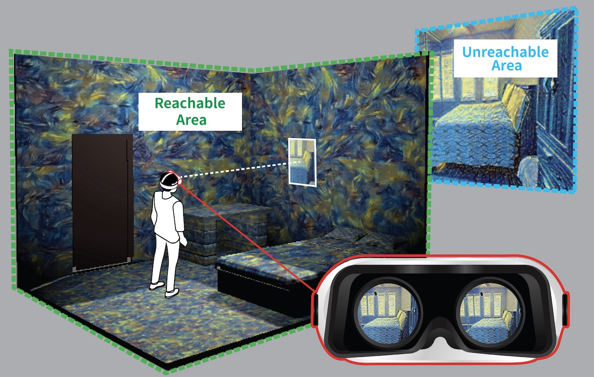

Kuan-Wei Tseng, Yao-Chih Lee, Chu-Song Chen
In CVPR 2022 Workshop
| Paper | Codes | Video | Poster |
It is a two-stage method that contains a view synthesis stage and a style transfer stage. Before neural style transfer, we perform occlusion aware dense matching using optical flow to ensure spatial consistency.
We propose modeling the unreachable area in VR with stylized novel view synthesis as an alternative to actual 3D model or 360 image. A: users can see a stereoscopic image pair synthesized from the monocular content in VR. See here more information.
If you find our paper or codes helpful, please cite
@InProceedings{Tseng_2022_CVPRW,
author = {Tseng, Kuan-Wei and Lee, Yao-Chih and Chen, Chu-Song},
title = {Artistic Style Novel View Synthesis Based on A Single Image},
booktitle = {Proceedings of the IEEE/CVF Conference on Computer Vision and Pattern Recognition (CVPR) Workshops},
month = {June},
year = {2022},
}
For VR application, please cite
@InProceedings{Tseng_2022_SIGGRAPH,
author = {Tseng, Kuan-Wei and Huang, Jing-Yuan and Chen, Yang-Sheng and Chen, Chu-Song and Hung, Yi-Ping},
title = {Pseudo-3D Scene Modeling for Virtual Reality Using Stylized Novel View Synthesis},
booktitle = {ACM SIGGRAPH 2022 Posters},
month = {July},
year = {2022},
}
{kind=link}